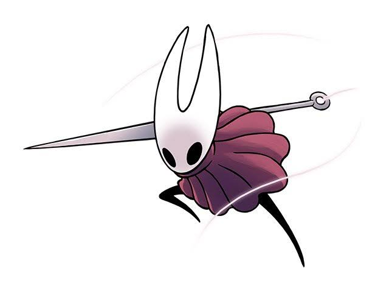
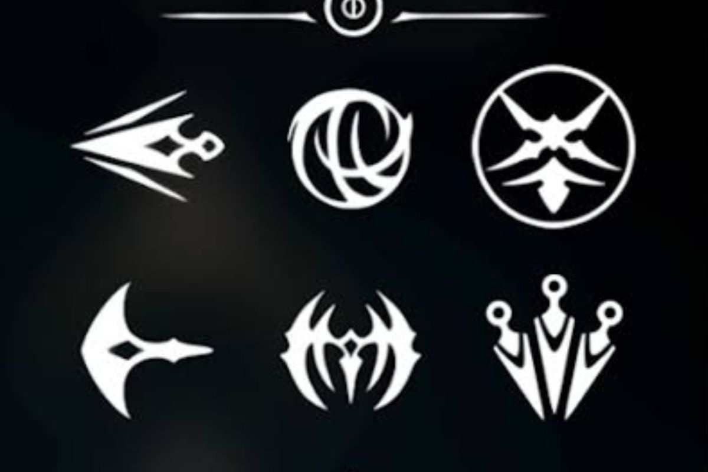
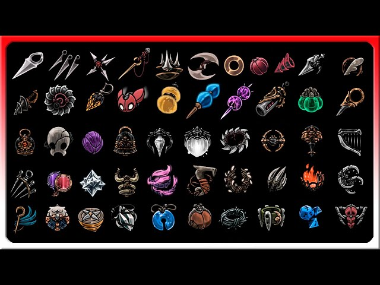

Hornet y la jugabilidad
Hornet pelea con una aguja larga y un hilo de seda que le sirve como herramienta de combate y de movimiento. Puede lanzarse hacia los enemigos, esquivar con rapidez y usar la seda para curarse en medio de la batalla.
El juego mantiene la exploración por zonas conectadas que se abren poco a poco al conseguir nuevas habilidades. Si algo se ve inaccesible, probablemente tendrás que volver más adelante con otra capacidad.
También hay herramientas que se equipan y se gastan, como trampas y proyectiles, y estilos de combate distintos según el emblema que lleve Hornet. Esto permite jugar de forma más agresiva o más defensiva.



Habilidades principales
Seda Recurso
Se obtiene al golpear enemigos y sirve para curarse o lanzar ataques especiales.
- Movimientos de Hornet
- Salto y salto en el aire
- Esquiva rápida
- Agarre en paredes